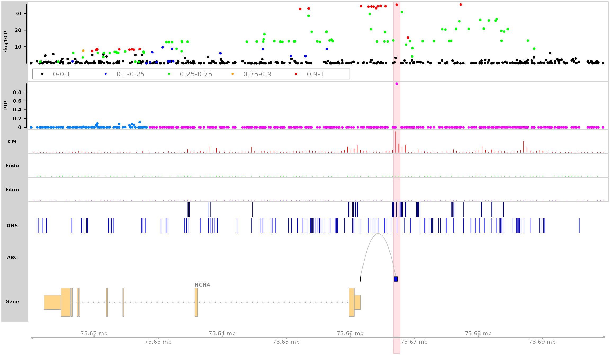

vignettes/track_plot_tutorial.Rmd
track_plot_tutorial.RmdPlease have the following Bioconductor packages installed:
GenomicFeatures, rtracklayer,
Gviz, GenomicInteractions,
AnnotationDbi, org.Hs.eg.db.
Load packages
library(GenomicFeatures) # Making and manipulating annotations
library(rtracklayer) # Import annotation data
library(Gviz) # R package used to visualize track plots
library(GenomicInteractions) # visualize HiC loops
library(AnnotationDbi) # match gene ID to gene symbol
library(org.Hs.eg.db) # match gene ID to gene symbol
library(mapgen)If you are in Xin He lab at U Chicago, you can access the example data on RCC:
trackdata.dir <- "/project2/xinhe/shared_data/mapgen/example_data/trackplot"Here we use the fine-mapping summary statistics from the AFib study.
finemapstats <- readRDS(system.file("extdata", "AF.finemapping.sumstats.rds", package = "mapgen"))
finemapstats <- process_finemapping_sumstats(finemapstats,
snp = 'snp',
chr = 'chr',
pos = 'pos',
pip = 'susie_pip',
pval = 'pval',
zscore = 'zscore',
cs = 'cs',
locus = 'locus',
pip.thresh = 0)## Processing fine-mapping summary statistics ...You can download gene annotations (GTF file) from GENCODE, and make gene
annotations using the make_genomic_annots() function with
the GTF file.
gtf_file <- '/project2/xinhe/shared_data/gencode/gencode.v19.annotation.gtf.gz'
genomic.annots <- make_genomic_annots(gtf_file)We included gene annotations (hg19) in the package, downloaded from GENCODE release 19.
genomic.annots <- readRDS(system.file("extdata", "genomic.annots.hg19.rds", package = "mapgen"))
gene.annots <- genomic.annots$genesWe can build a TxDb database (“.sqlite”) using the GTF
file, and use to load the TxDb database.
gtf_file <- '/project2/xinhe/shared_data/gencode/gencode.v19.annotation.gtf.gz'
txdb <- makeTxDbFromGFF(gtf_file, format = "gtf")
saveDb(txdb, "gencode.v19.annotation.gtf.sqlite")If you are in Xin He lab at UChicago, you can access the gene
annotations and TxDb database from RCC.
gtf_file <- '/project2/xinhe/shared_data/gencode/gencode.v19.annotation.gtf.gz'
txdb <- loadDb("/project2/xinhe/shared_data/gencode/gencode.v19.annotation.gtf.sqlite")Load promoter-capture HiC (PC-HiC) data from cardiomyocytes (CMs).
pcHiC <- readRDS(system.file("extdata", "pcHiC.CM.gr.rds", package = "mapgen"))
pcHiC <- pcHiC[pcHiC$gene_name %in% gene.annots$gene_name, ] # restrict to protein coding genesLoad ABC scores from heart ventricle (from Nasser et al. Nature 2021).
ABC <- data.table::fread(system.file("extdata", "heart_ventricle-ENCODE_ABC.tsv.gz", package = "mapgen"))
ABC <- process_ABC(ABC, full.element = TRUE)
ABC <- ABC[ABC$gene_name %in% gene.annots$gene_name, ] # restrict to protein coding genes
ABC$score <- ABC$score * 100 # scale to visualize the ABC scores
head(ABC, 3)## GRanges object with 3 ranges and 4 metadata columns:
## seqnames ranges strand | promoter_start promoter_end gene_name
## <Rle> <IRanges> <Rle> | <integer> <integer> <character>
## [1] chr1 888243-888743 * | 894679 894679 NOC2L
## [2] chr1 908361-908861 * | 895966 895966 KLHL17
## [3] chr1 908361-908861 * | 901876 901876 PLEKHN1
## score
## <numeric>
## [1] 1.5224
## [2] 1.7673
## [3] 4.1100
## -------
## seqinfo: 23 sequences from an unspecified genome; no seqlengthsLoad H3K27ac and DHS .bed files.
H3K27ac_peaks <- rtracklayer::import(file.path(trackdata.dir, "H3K27ac.heart.concat.hg19.bed.gz"))
DHS_peaks <- rtracklayer::import(file.path(trackdata.dir, "FetalHeart_E083.DNase.hg19.narrowPeak.bed.gz"))Load ATAC-seq counts data (the data should be in wig,
bigWig/bw, bedGraph, or bam
format)
If you want to visualize r^2 between SNPs, we need a reference panel
in a bigSNP object. (we will implement an option that takes
LD matrix as input)
If you don’t provide the bigSNP object, the SNPs in the
GWAS track will be plotted in the same color.
If you are in the He lab at UChicago, you can load the
bigSNP object from the 1000 Genomes (1KG) European
population.
bigSNP <- bigsnpr::snp_attach(rdsfile = '/project2/xinhe/1kg/bigsnpr/EUR_variable_1kg.rds')Plot HCN4 locus in the genomic region “chr15:73610000-73700000”
Highlight SNP “rs7172038”
counts <- list("CM" = CM_counts, "Endo" = Endo_counts, "Fibro" = Fibro_counts)
peaks <- list("H3K27ac" = H3K27ac_peaks, "DHS" = DHS_peaks)
loops <- list("ABC" = ABC)
track_plot(finemapstats,
region = "chr15:73610000-73700000",
gene.annots,
bigSNP = bigSNP,
txdb = txdb,
counts = counts,
peaks = peaks,
loops = loops,
genome = "hg19",
filter_loop_genes = "HCN4",
highlight_snps = "topSNP",
counts.color = c("red", "green", "purple"),
peaks.color = c("navy", "blue"),
loops.color = "gray",
genelabel.side = "above",
verbose = TRUE)## 463 snps included.
## Color SNPs in PIP track by loci.
## Adding CM track...
## Adding Endo track...
## Adding Fibro track...
## Adding H3K27ac track...
## Adding DHS track...
## Adding ABC track...
## Only show ABC loops linked to gene: HCN4
## Making gene track object using txdb database ...## 'select()' returned 1:1 mapping between keys and columns## Highlight SNP: rs7172038
## Making track plot ...